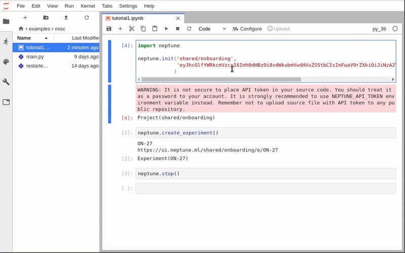

Session and Experiment
Session and experiment are two core concepts behind neptune-client. This tutorial guides you through them and explains how to work with them.
Session
In the first tutorial, as you remember, we initialized Neptune using neptune.init:
import neptune
neptune.init('USERNAME/PROJECT_NAME')
...
However, full definition of the neptune.init is like this:
neptune.init(project_qualified_name='USERNAME/PROJECT_NAME',
api_token='YOUR_LONG_API_TOKEN')
project_qualified_name- this is USERNAME/PROJECT_NAME, where first component is organization name and second is project name (as you created in the Neptune web application).api_token- User can explicitly pasteNEPTUNE_API_TOKENhere, however, it is not recommended. This method first look for environment variable, then value passed here. Note that this value overwrites environment variable.
Note
If you have your API token stored in the NEPTUNE_API_TOKEN environment variable you can leave the api_token argument empty.
That is not the only way of doing it but does make things simpler. If you want to have more control you can explicitly start neptune session:
from neptune.sessions import Session
session = Session(api_token='YOUR_LONG_API_TOKEN')
The session object lazily contains all of the projects that you have access too. You can fetch the project on which you want to work on by running:
project = session.get_project(project_qualified_name='USERNAME/PROJECT_NAME')
And create a new experiment in that project.
experiment = project.create_experiment()
Returned experiment lets you invoke all methods that you know from the previous tutorial, for example:
experiment = project.create_experiment()
experiment.send_metric('iteration', i)
experiment.send_metric('loss', 1/i**0.5)
experiment.set_property('n_iterations', 117)
Experiment
Let’s dive into the create_experiment method and what you can track with it. As you remember in the minimal example we started an experiment, logged something to it, and stopped it:
neptune.create_experiment()
neptune.send_metric('auc', 0.93)
neptune.stop()
You can make it cleaner and create your experiments in with statement blocks:
with neptune.create_experiment() as exp:
exp.send_metric('auc', 0.93)
By doing that you will never forget to stop your experiments. We recommend you use this option. Also, if you are creating more than one experiment, this approach keeps things civil.
Ok, now that we know how to start and stop experiments let’s see what happens in the app when you actually run it.
{kind=link}
With every create_experiment a new record is added to Neptune with a state running. When you run stop on your experiment, either explicitly or implicitly, the state is changed to succeeded.